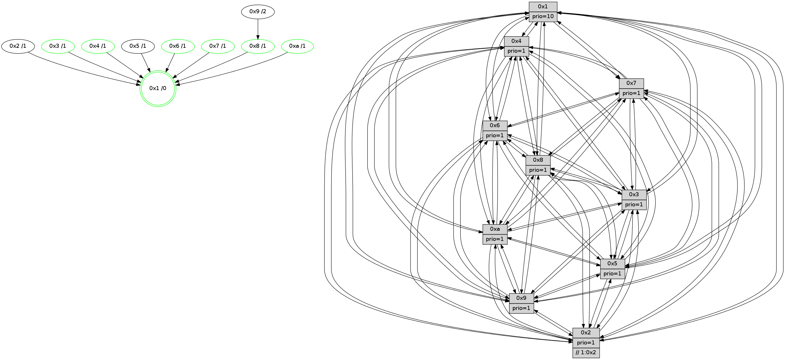

>> << IDX [start] -100 -25 -5 +0 +5 +25 +100 [985.592311144]
 Previous packets
----------------------------------------------------------------------
980.075390 beacon01(faad) #0 coord=01,02,03,04,05,06,07,0a,09,08 cycle=688.0ms assoc
-- color-indic=1 64 26 34
980.085371 beacon02(faad) #0 coord=01,02,03,04,05,06,07,0a,09,08 cycle=688.0ms assoc 64 b5 05
980.095372 beacon03(faad) #0 coord=01,02,03,04,05,06,07,0a,09,08 cycle=688.0ms assoc 64 cf 48
980.105372 beacon04(faad) #0 coord=01,02,03,04,05,06,07,0a,09,08 cycle=688.0ms assoc 64 b8 a2
980.115373 beacon05(faad) #0 coord=01,02,03,04,05,06,07,0a,09,08 cycle=688.0ms assoc 64 c2 ef
980.125374 beacon06(faad) #0 coord=01,02,03,04,05,06,07,0a,09,08 cycle=688.0ms assoc 64 4c 38
980.135374 beacon07(faad) #0 coord=01,02,03,04,05,06,07,0a,09,08 cycle=688.0ms assoc 64 36 75
980.145377 beacon0a(faad) #0 coord=01,02,03,04,05,06,07,0a,09,08 cycle=688.0ms assoc 64 47 7e
980.155377 beacon09(faad) #0 coord=01,02,03,04,05,06,07,0a,09,08 cycle=688.0ms assoc 64 c9 a9
980.165378 beacon08(faad) #0 coord=01,02,03,04,05,06,07,0a,09,08 cycle=688.0ms assoc 64 b3 e4
980.176613 [Hello(7): seq=626 sym=2,3,5,6,4,8,9,10,1 sysInfo=hasWarning stat=2:15,0,9,12/3:14,7,2,12/5:0,15,6,15/6:13,5,2,6/4:7,3,0,1/8:0,11,2,0/9:11,4,1,0/10:12,12,8,2/1:3,9,1,0]
980.179291 [Hello(10): seq=559 sym=6,2,3,8,7,5,9,4,1 sysInfo=hasWarning stat=6:7,3,2,4/2:9,15,13,4/3:2,13,9,8/8:6,3,4,1/7:14,15,2,1/5:3,0,3,12/9:12,7,1,0/4:6,2,6,7/1:5,13,6,1]
980.182020 [Color(1) seq=307 @0:0 prio=10]
980.185519 [Hello(8): seq=570 sym=5,2,3,4,9,6,7,10,1 sysInfo=hasWarning stat=5:2,4,4,12/2:3,0,14,5/3:5,10,14,12/4:0,15,13,8/9:12,6,2,1/6:6,15,13,10/7:12,11,4,1/10:11,7,6,1/1:10,3,14,0]
980.189353 [Hello(4): seq=626 sym=5,7,6,2,3,9,8,10,1 sysInfo= stat=5:14,5,14,11/7:4,2,0,7/6:9,4,11,9/2:15,5,9,9/3:5,3,11,8/9:15,7,2,8/8:11,9,3,2/10:0,13,6,10/1:10,4,3,1]
980.194606 [Hello(9): seq=570 sym=2,5,3,4,7,6,8,10,1 sysInfo=hasWarning stat=2:2,7,15,3/5:8,6,12,3/3:2,4,13,12/4:15,4,10,7/7:0,7,15,9/6:4,15,5,8/8:13,12,15,2/10:5,4,2,1/1:14,0,2,1]
----------------------------------------------------------------------
980.863520 beacon01(faad) #0 coord=01,02,03,04,05,06,07,0a,09,08 cycle=688.0ms assoc
-- color-indic=1 64 e2 3a
980.873503 beacon02(faad) #0 coord=01,02,03,04,05,06,07,0a,09,08 cycle=688.0ms assoc 64 71 0b
980.883501 beacon03(faad) #0 coord=01,02,03,04,05,06,07,0a,09,08 cycle=688.0ms assoc 64 0b 46
980.893503 beacon04(faad) #0 coord=01,02,03,04,05,06,07,0a,09,08 cycle=688.0ms assoc 64 7c ac
980.903502 beacon05(faad) #0 coord=01,02,03,04,05,06,07,0a,09,08 cycle=688.0ms assoc 64 06 e1
980.913504 beacon06(faad) #0 coord=01,02,03,04,05,06,07,0a,09,08 cycle=688.0ms assoc 64 88 36
980.923505 beacon07(faad) #0 coord=01,02,03,04,05,06,07,0a,09,08 cycle=688.0ms assoc 64 f2 7b
980.933511 beacon0a(faad) #0 coord=01,02,03,04,05,06,07,0a,09,08 cycle=688.0ms assoc 64 83 70
980.943508 beacon09(faad) #0 coord=01,02,03,04,05,06,07,0a,09,08 cycle=688.0ms assoc 64 0d a7
980.953509 beacon08(faad) #0 coord=01,02,03,04,05,06,07,0a,09,08 cycle=688.0ms assoc 64 77 ea
980.965643 [Hello(5): seq=627 sym=7,6,4,3,1,9,8,10,2 sysInfo=hasWarning stat=7:4,11,5,9/6:10,0,5,0/4:2,5,1,8/3:8,0,9,10/1:10,11,5,1/9:15,15,15,5/8:0,6,12,9/10:15,5,9,5/2:1,0,0,0]
980.968335 [Hello(2): seq=623 sym=4,5,7,6,3,9,8,10,1 sysInfo=hasWarning stat=4:11,6,6,6/5:0,5,7,1/7:13,14,3,9/6:7,6,11,8/3:7,10,9,5/9:8,11,12,5/8:14,7,7,8/10:0,9,14,10/1:7,8,1,1]
980.971426 [Hello(1): seq=536 sym=4,2,9,5,10,3,8,6,7 sysInfo=coloring-mode-on,ColoringModeRequestCalled stat=4:7,14,2,2/2:11,3,15,12/9:7,11,15,6/5:1,3,8,5/10:11,14,15,3/3:11,11,0,3/8:1,2,0,0/6:9,13,13,10/7:6,11,0,12]
980.973934 [Color(4) seq=219 @0:0 prio=1]
980.975351 [Color(10) seq=231 @0:0 prio=1]
980.977405 [Hello(6): seq=627 sym=2,3,5,4,7,9,8,10,1 sysInfo= stat=2:3,0,0,0/3:12,4,1,10/5:10,9,0,12/4:0,9,8,2/7:5,8,15,6/9:7,11,15,5/8:2,9,12,2/10:3,15,6,11/1:1,0,0,1]
980.979830 [Color(8) seq=260 @0:0 prio=1]
980.981909 [Hello(3): seq=627 sym=1,7,6,2,4,8,9,10,5 sysInfo= stat=1:12,5,11,0/7:11,9,8,7/6:12,2,11,2/2:14,2,13,10/4:2,3,15,7/8:15,0,7,1/9:15,2,10,11/10:11,5,10,3/5:3,11,6,11]
980.985032 [Color(3) seq=256 @0:0 prio=1]
980.987506 [Color(6) seq=259 @0:0 prio=1]
980.991616 [Color(9) seq=259 @0:0 prio=1]
980.997377 [Color(7) seq=210 @0:0 prio=1]
----------------------------------------------------------------------
981.651652 beacon01(faad) #0 coord=01,02,03,04,05,06,07,0a,09,08 cycle=688.0ms assoc
-- color-indic=1 64 5e 3f
981.661634 beacon02(faad) #0 coord=01,02,03,04,05,06,07,0a,09,08 cycle=688.0ms assoc 64 cd 0e
981.671634 beacon03(faad) #0 coord=01,02,03,04,05,06,07,0a,09,08 cycle=688.0ms assoc 64 b7 43
981.681636 beacon04(faad) #0 coord=01,02,03,04,05,06,07,0a,09,08 cycle=688.0ms assoc 64 c0 a9
981.691635 beacon05(faad) #0 coord=01,02,03,04,05,06,07,0a,09,08 cycle=688.0ms assoc 64 ba e4
981.701634 beacon06(faad) #0 coord=01,02,03,04,05,06,07,0a,09,08 cycle=688.0ms assoc 64 34 33
981.711635 beacon07(faad) #0 coord=01,02,03,04,05,06,07,0a,09,08 cycle=688.0ms assoc 64 4e 7e
981.721638 beacon0a(faad) #0 coord=01,02,03,04,05,06,07,0a,09,08 cycle=688.0ms assoc 64 3f 75
981.731639 beacon09(faad) #0 coord=01,02,03,04,05,06,07,0a,09,08 cycle=688.0ms assoc 64 b1 a2
981.741640 beacon08(faad) #0 coord=01,02,03,04,05,06,07,0a,09,08 cycle=688.0ms assoc 64 cb ef
981.752866 [Hello(4): seq=627 sym=5,7,6,2,3,9,8,10,1 sysInfo= stat=5:15,5,14,11/7:4,3,0,7/6:10,5,11,9/2:15,5,9,9/3:6,4,11,8/9:0,8,2,8/8:11,9,3,2/10:0,14,6,10/1:10,4,3,1]
981.755886 [Hello(8): seq=571 sym=5,2,3,4,9,6,7,10,1 sysInfo=hasWarning stat=5:3,4,4,12/2:3,0,14,5/3:6,11,14,12/4:1,15,13,8/9:13,7,2,1/6:6,0,13,10/7:12,12,4,1/10:11,7,6,1/1:10,3,14,0]
981.759043 [Hello(7): seq=627 sym=2,3,5,6,4,8,9,10,1 sysInfo=hasWarning stat=2:15,0,9,12/3:14,7,2,12/5:1,15,6,15/6:13,5,2,6/4:8,3,0,1/8:1,11,2,0/9:12,4,1,0/10:13,12,8,2/1:3,10,1,0]
981.762061 [Hello(10): seq=560 sym=6,2,3,8,7,5,9,4,1 sysInfo=hasWarning stat=6:8,4,2,4/2:9,15,13,4/3:3,14,9,8/8:7,3,4,1/7:14,0,2,1/5:4,0,3,12/9:13,8,1,0/4:7,2,6,7/1:5,14,6,1]
981.764492 [Color(1) seq=308 @0:0 prio=10]
981.770210 [Hello(9): seq=571 sym=2,5,3,4,7,6,8,10,1 sysInfo=hasWarning stat=2:2,7,15,3/5:9,6,12,3/3:2,4,13,12/4:15,4,10,7/7:0,8,15,9/6:4,15,5,8/8:13,12,15,2/10:5,4,2,1/1:14,0,2,1]
----------------------------------------------------------------------
982.439783 beacon01(faad) #0 coord=01,02,03,04,05,06,07,0a,09,08 cycle=688.0ms assoc
-- color-indic=1 64 4a 51
982.449765 beacon02(faad) #0 coord=01,02,03,04,05,06,07,0a,09,08 cycle=688.0ms assoc 64 d9 60
982.459764 beacon03(faad) #0 coord=01,02,03,04,05,06,07,0a,09,08 cycle=688.0ms assoc 64 a3 2d
982.469766 beacon04(faad) #0 coord=01,02,03,04,05,06,07,0a,09,08 cycle=688.0ms assoc 64 d4 c7
982.479767 beacon05(faad) #0 coord=01,02,03,04,05,06,07,0a,09,08 cycle=688.0ms assoc 64 ae 8a
982.489765 beacon06(faad) #0 coord=01,02,03,04,05,06,07,0a,09,08 cycle=688.0ms assoc 64 20 5d
982.499766 beacon07(faad) #0 coord=01,02,03,04,05,06,07,0a,09,08 cycle=688.0ms assoc 64 5a 10
982.509770 beacon0a(faad) #0 coord=01,02,03,04,05,06,07,0a,09,08 cycle=688.0ms assoc 64 2b 1b
982.519771 beacon09(faad) #0 coord=01,02,03,04,05,06,07,0a,09,08 cycle=688.0ms assoc 64 a5 cc
982.529771 beacon08(faad) #0 coord=01,02,03,04,05,06,07,0a,09,08 cycle=688.0ms assoc 64 df 81
982.541881 [Hello(5): seq=628 sym=7,6,4,3,1,9,8,10,2 sysInfo=hasWarning stat=7:5,12,5,9/6:11,1,5,0/4:3,6,1,8/3:9,1,9,10/1:11,11,5,1/9:0,0,15,5/8:1,6,12,9/10:0,6,9,5/2:2,0,0,0]
982.544616 [Color(4) seq=220 @0:0 prio=1]
982.545888 [Color(8) seq=261 @0:0 prio=1]
982.547225 [Hello(1): seq=537 sym=4,2,9,5,10,3,8,6,7 sysInfo=coloring-mode-on,ColoringModeRequestCalled stat=4:8,15,2,2/2:11,3,15,12/9:8,12,15,6/5:1,3,8,5/10:11,15,15,3/3:12,12,0,3/8:2,2,0,0/6:10,14,13,10/7:6,12,0,12]
982.550321 [Hello(6): seq=628 sym=2,3,5,4,7,9,8,10,1 sysInfo= stat=2:4,0,0,0/3:12,4,1,10/5:11,9,0,12/4:1,9,8,2/7:6,9,15,6/9:8,12,15,5/8:3,10,12,2/10:4,15,6,11/1:1,0,0,1]
982.553049 [STC(1) #0.134 tree-change,inconsistent-stability,stable,to-color d=0]
982.555699 [Color(7) seq=211 @0:0 prio=1]
982.557068 [Hello(3): seq=628 sym=1,7,6,2,4,8,9,10,5 sysInfo= stat=1:12,5,11,0/7:12,10,8,7/6:12,3,11,2/2:14,2,13,10/4:3,3,15,7/8:0,0,7,1/9:0,3,10,11/10:12,5,10,3/5:4,11,6,11]
982.560063 [Hello(2): seq=624 sym=4,5,7,6,3,9,8,10,1 sysInfo=hasWarning stat=4:12,7,6,6/5:0,5,7,1/7:14,15,3,9/6:8,7,11,8/3:8,11,9,5/9:9,12,12,5/8:15,7,7,8/10:1,10,14,10/1:8,8,1,1]
982.562925 [Color(10) seq=232 @0:0 prio=1]
982.565736 [Color(6) seq=260 @0:0 prio=1]
982.570090 [Color(3) seq=257 @0:0 prio=1]
----------------------------------------------------------------------
983.227912 beacon01(faad) #0 coord=01,02,03,04,05,06,07,0a,09,08 cycle=688.0ms assoc
-- color-indic=1 64 f6 54
983.237894 beacon02(faad) #0 coord=01,02,03,04,05,06,07,0a,09,08 cycle=688.0ms assoc 64 65 65
983.247894 beacon03(faad) #0 coord=01,02,03,04,05,06,07,0a,09,08 cycle=688.0ms assoc 64 1f 28
983.257896 beacon04(faad) #0 coord=01,02,03,04,05,06,07,0a,09,08 cycle=688.0ms assoc 64 68 c2
983.267896 beacon05(faad) #0 coord=01,02,03,04,05,06,07,0a,09,08 cycle=688.0ms assoc 64 12 8f
983.277895 beacon06(faad) #0 coord=01,02,03,04,05,06,07,0a,09,08 cycle=688.0ms assoc 64 9c 58
983.287896 beacon07(faad) #0 coord=01,02,03,04,05,06,07,0a,09,08 cycle=688.0ms assoc 64 e6 15
983.297900 beacon0a(faad) #0 coord=01,02,03,04,05,06,07,0a,09,08 cycle=688.0ms assoc 64 97 1e
983.307900 beacon09(faad) #0 coord=01,02,03,04,05,06,07,0a,09,08 cycle=688.0ms assoc 64 19 c9
983.317900 beacon08(faad) #0 coord=01,02,03,04,05,06,07,0a,09,08 cycle=688.0ms assoc 64 63 84
983.329123 [Hello(9): seq=572 sym=2,5,3,4,7,6,8,10,1 sysInfo=hasWarning stat=2:2,7,15,3/5:10,6,12,3/3:2,5,13,12/4:15,4,10,7/7:0,8,15,9/6:4,0,5,8/8:13,12,15,2/10:5,5,2,1/1:14,0,2,1]
983.331859 [Hello(4): seq=628 sym=5,7,6,2,3,9,8,10,1 sysInfo= stat=5:0,5,14,11/7:5,4,0,7/6:11,6,11,9/2:15,5,9,9/3:7,5,11,8/9:1,9,2,8/8:12,10,3,2/10:1,15,6,10/1:11,4,4,1]
983.334581 [Color(1) seq=309 @0:0 prio=10]
983.337375 [Hello(10): seq=561 sym=6,2,3,8,7,5,9,4,1 sysInfo=hasWarning stat=6:8,5,2,4/2:9,15,13,4/3:3,15,9,8/8:7,3,4,1/7:14,0,2,1/5:5,0,3,12/9:14,8,1,0/4:7,2,6,7/1:5,15,6,1]
983.342137 [Hello(8): seq=572 sym=5,2,3,4,9,6,7,10,1 sysInfo=hasWarning stat=5:4,4,4,12/2:3,0,14,5/3:7,12,14,12/4:1,15,13,8/9:14,8,2,1/6:7,1,13,10/7:13,13,4,1/10:12,8,6,1/1:11,3,15,0]
983.345921 [STC(8)->1 #0.134 tree-change,inconsistent-stability,stable,to-color d=1]
983.347502 [STC(5)->1 #0.134 tree-change,inconsistent-stability,to-color d=1]
983.351724 [Hello(7): seq=628 sym=2,3,5,6,4,8,9,10,1 sysInfo=hasWarning stat=2:0,0,9,12/3:15,8,2,12/5:2,15,6,15/6:13,6,2,6/4:8,3,0,1/8:1,11,2,0/9:13,4,1,0/10:14,13,8,2/1:3,10,1,0]
983.354650 [STC(4)->1 #0.134 tree-change,inconsistent-stability,stable,to-color d=1]
----------------------------------------------------------------------
984.016047 beacon01(faad) #0 coord=01,02,03,04,05,06,07,0a,09,08 cycle=688.0ms assoc
-- color-indic=1 64 32 5a
984.026030 beacon02(faad) #0 coord=01,02,03,04,05,06,07,0a,09,08 cycle=688.0ms assoc 64 a1 6b
984.036030 beacon03(faad) #0 coord=01,02,03,04,05,06,07,0a,09,08 cycle=688.0ms assoc 64 db 26
984.046030 beacon04(faad) #0 coord=01,02,03,04,05,06,07,0a,09,08 cycle=688.0ms assoc 64 ac cc
984.056029 beacon05(faad) #0 coord=01,02,03,04,05,06,07,0a,09,08 cycle=688.0ms assoc 64 d6 81
984.066029 beacon06(faad) #0 coord=01,02,03,04,05,06,07,0a,09,08 cycle=688.0ms assoc 64 58 56
984.076029 beacon07(faad) #0 coord=01,02,03,04,05,06,07,0a,09,08 cycle=688.0ms assoc 64 22 1b
984.086035 beacon0a(faad) #0 coord=01,02,03,04,05,06,07,0a,09,08 cycle=688.0ms assoc 64 53 10
984.096035 beacon09(faad) #0 coord=01,02,03,04,05,06,07,0a,09,08 cycle=688.0ms assoc 64 dd c7
984.106036 beacon08(faad) #0 coord=01,02,03,04,05,06,07,0a,09,08 cycle=688.0ms assoc 64 a7 8a
984.117218 [Hello(2): seq=625 sym=4,5,7,6,3,9,8,10,1 sysInfo=hasWarning stat=4:13,7,7,6/5:0,5,8,1/7:15,15,3,9/6:8,8,11,8/3:8,12,9,5/9:10,12,12,5/8:0,7,8,8/10:2,11,14,10/1:8,9,1,1]
984.120396 [Color(10) seq=233 @0:0 prio=1]
984.122056 [Hello(1): seq=538 sym=4,2,9,5,10,3,8,6,7 sysInfo=coloring-mode-on,ColoringModeRequestCalled stat=4:9,15,3,2/2:12,3,15,12/9:9,12,15,6/5:1,3,9,5/10:12,0,15,3/3:13,13,0,3/8:3,2,1,0/6:10,15,13,10/7:7,13,0,12]
984.124546 [Hello(6): seq=629 sym=2,3,5,4,7,9,8,10,1 sysInfo= stat=2:4,0,0,0/3:12,5,1,10/5:12,9,1,12/4:2,10,9,2/7:7,9,15,6/9:9,12,15,5/8:4,10,13,2/10:5,15,6,11/1:1,1,0,1]
984.127662 [Hello(5): seq=629 sym=7,6,4,3,1,9,8,10,2 sysInfo=hasWarning stat=7:6,13,5,9/6:12,2,5,0/4:3,7,2,8/3:10,2,9,10/1:12,11,6,1/9:0,1,15,5/8:1,7,12,9/10:0,7,9,5/2:2,0,0,0]
984.130125 [Hello(3): seq=629 sym=1,7,6,2,4,8,9,10,5 sysInfo= stat=1:12,6,11,0/7:13,10,8,7/6:12,3,11,2/2:14,2,13,10/4:4,3,0,7/8:1,0,8,1/9:1,3,10,11/10:13,5,10,3/5:5,11,7,11]
984.133445 [Color(8) seq=262 @0:0 prio=1]
984.135203 [Color(3) seq=258 @0:0 prio=1]
984.136783 [Color(7) seq=212 @0:0 prio=1]
984.138283 [Color(4) seq=221 @0:0 prio=1]
984.140868 [Color(6) seq=261 @0:0 prio=1]
984.144691 [STC(9)->8-.->1 #0.134 to-color d=2]
----------------------------------------------------------------------
984.804180 beacon01(faad) #0 coord=01,02,03,04,05,06,07,0a,09,08 cycle=688.0ms assoc
-- color-indic=1 64 8e 5f
984.814163 beacon02(faad) #0 coord=01,02,03,04,05,06,07,0a,09,08 cycle=688.0ms assoc 64 1d 6e
984.824163 beacon03(faad) #0 coord=01,02,03,04,05,06,07,0a,09,08 cycle=688.0ms assoc 64 67 23
984.834164 beacon04(faad) #0 coord=01,02,03,04,05,06,07,0a,09,08 cycle=688.0ms assoc 64 10 c9
984.844162 beacon05(faad) #0 coord=01,02,03,04,05,06,07,0a,09,08 cycle=688.0ms assoc 64 6a 84
984.854162 beacon06(faad) #0 coord=01,02,03,04,05,06,07,0a,09,08 cycle=688.0ms assoc 64 e4 53
984.864165 beacon07(faad) #0 coord=01,02,03,04,05,06,07,0a,09,08 cycle=688.0ms assoc 64 9e 1e
984.874168 beacon0a(faad) #0 coord=01,02,03,04,05,06,07,0a,09,08 cycle=688.0ms assoc 64 ef 15
984.884169 beacon09(faad) #0 coord=01,02,03,04,05,06,07,0a,09,08 cycle=688.0ms assoc 64 61 c2
984.894168 beacon08(faad) #0 coord=01,02,03,04,05,06,07,0a,09,08 cycle=688.0ms assoc 64 1b 8f
984.906019 [Hello(10): seq=562 sym=6,2,3,8,7,5,9,4,1 sysInfo=hasWarning stat=6:9,6,2,4/2:10,15,13,4/3:4,0,9,8/8:8,4,5,1/7:15,1,2,1/5:6,0,4,12/9:14,8,2,0/4:7,3,7,7/1:6,15,6,1]
984.908932 [Color(1) seq=310 @0:0 prio=10]
984.912058 [Hello(7): seq=629 sym=2,3,5,6,4,8,9,10,1 sysInfo=hasWarning stat=2:1,0,9,12/3:15,8,2,12/5:2,15,6,15/6:13,7,2,6/4:8,4,1,1/8:1,11,2,0/9:13,4,2,0/10:14,13,8,2/1:3,10,1,0]
984.914604 [Hello(4): seq=629 sym=5,7,6,2,3,9,8,10,1 sysInfo= stat=5:0,5,14,11/7:5,4,0,7/6:11,7,11,9/2:0,5,9,9/3:7,5,11,8/9:1,9,3,8/8:12,10,3,2/10:1,15,6,10/1:11,4,4,1]
984.919289 [TreeStatus(8)-.->1 #0.134 tree-change,inconsistent-stability,stable child=1]